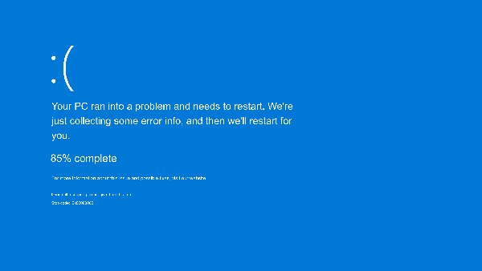
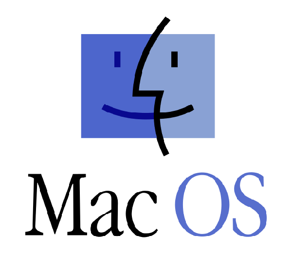

Operating Systems
What is an Operating System?
Computers are dumb, right? The thing with computers, is that the full potential of a powerful computer, would be wasted if it were set up to perform one, and only one task. This is how primitive computers operated, and it required lots of unaided thinking to even put a new program into a multi-purpose computer. So, operating systems were invented, or so I would guess.
In essence, an operating system (or OS) is a computer program that deals with the hardware of the computer, thus providing the user with an interface with which they can perform many different tasks, more or less, seamlessly. There are many layers to an OS, and as the years have passed since the introduction of consumer-grade personal micro-computers, OS have become more and more complex.
At the most basic level, the core of an OS is called the kernel, and it is just what was described in the previous paragraph: an intermediary between the physical and the virtual. Still, an OS can be more than just the kernel, as many application-level programs are developed as part of the OS's core environment. Take Windows: neither Paint nor File Explorer are fundamental to the OS's functionality, but they come included as part of the OS nonetheless.
Some examples
There have been, and are, many OSes, and they will continue to exist and be developed for a long time (unless this miserable existence ends in five years or so). The OS one thinks of usually, is what I'd call the user OS: examples are the pile of garbage we call Windows,  macOS, the walled-off-garden,  and Linux, the third-class citizen of OSes.
Still, an OS is anything that helps a computer run multiple tasks. Tiny devices, such as clocks, water heater controllers, oven consoles, calculators, work with an OS. These are usually developed with low power consumption in mind, and give access to a limited set of functions.